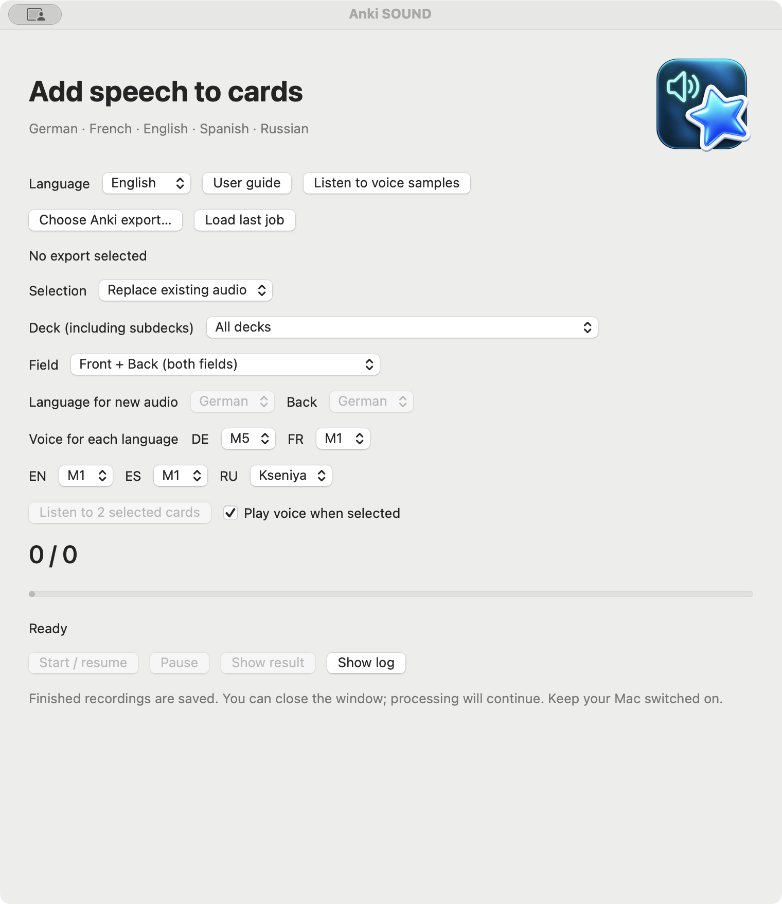

macOS 13+ · Apple Silicon
Anki SOUND
Add local speech to selected Anki cards and save a separately verified package.
Release · 3.4.11Before you startPython 3.9–3.12; internet for initial dependency and voice-model setup. Not notarized by Apple.


How it works
- Anki cards
- Choose a voice
- Add speech
First steps
Extract the complete folder to a writable location. Run SETUP.command, then OPEN.command and select an .apkg export.